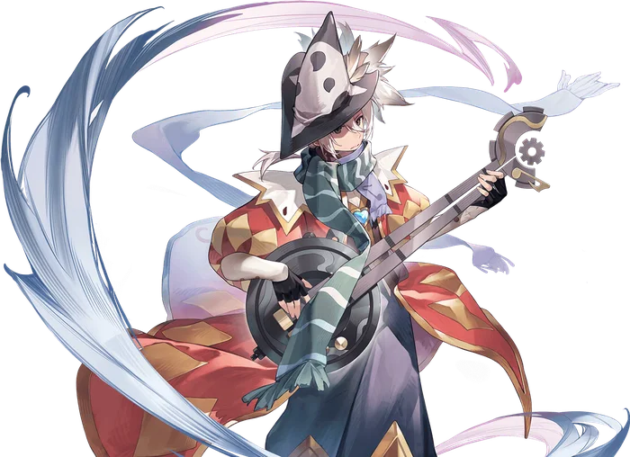
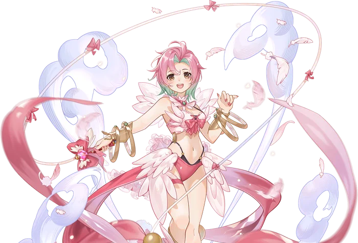

Third tier
Minstrel/Wanderer
Minstrel and Wanderer are the alternative advancement options for Bard and Dancer. They pick up the support mantle that the Clown and Gypsy abandoned, enhancing the already impressive support abilities of the Bard and Dancer with their own unique twist.
Because managing Rhythm levels wasn't quite enough, Minstrels and Wanderers gain two more effects to juggle: Melodic Mark and Hypnotic Harmony.
Melodic Mark is an offensive ability that, as you might guess, puts a mark on the targeted enemy, in addition to dealing a modest bit of damage. This mark causes all other offensive Minstrel/Wanderer skills to autotarget them, allowing the abilities to exhibit exceptional output against a wide range of foes, if the user is able to manage their marks correctly.
Hypnotic Harmony is the supportive counterpart to Melodic Mark. Casting Hypnotic Harmony on an ally applies its buff both to the ally and the user, slightly increasing their Base Stats for a duration. Once the Harmony is applied, all the supportive Minstrel/Wanderer skills will autotarget that ally, turning the Harmony into a much stronger bonus.
In order to aid in balancing these many marks and statuses, the Minstrel and Wanderer also gain access to two new utility skills. Improvised Interlude allows the user to set their Rhythm Level instantly to any number they wish, while Desperate Dynamic gives them a panic button to immediately apply Melodic Mark and Hypnotic Harmony to all appropriate targets within range.
Minstrel and Wanderer inherit and expand on the complexity of the Bard and Dancer classes, but those that can match their rhythm will dominate the battle with elegance and style.


Where it sits
Skill list
Skills
Grouped the way the tree is grouped. Names, types, targets and the numbers behind every level come from the player wiki, so they match what you see in game.
Core Skills2 skills
-
Improvised InterludeRhythmSelfLv 5
Instantly sets the user's Rhythm level.
The user improvises a melody, reaching a crescendo in their performance exactly when it's needed. Immediately sets the user's Rhythm level to a value determined by the skill level used.
Level by level
Level Rhythm Level Set 1 1 2 2 3 3 4 4 5 5 -
Desperate DynamicBuff/DebuffSelfLv 5
Mass-applies Melodic Mark to enemies and Hypnotic Harmony to allies.
The user adds a powerful chord to their performance, preparing for a desperate and grand climax. Immediately applies Melodic Mark to all enemies and Hypnotic Harmony to all allies within a given range of the user.
Works withHypnotic HarmonyMelodic Mark
Learn firstMelodic Mark Lv5, Hypnotic Harmony Lv5
Level by level
Level Range 1 4 cells 2 5 cells 3 6 cells 4 7 cells 5 8 cells
Melodic Mark Skills4 skills
-
Melodic MarkPhysicalEnemyLv 5
Curses a target to be struck by the user's note skills.
Applies a musical curse to the target, dealing a small amount of damage and making them vulnerable to further abilities coming from the user.
Level by level
Level Damage SP Cost 1 110% 16 2 120% 17 3 130% 18 4 140% 19 5 150% 20 -
Sonorant SpikePhysicalSelfLv 10
Detonates all Marks for Physical damage and Internal Bleeding.
The user sings a screeching note, triggering all of their Melodic Marks to deal damage to their targets. Deals Physical Ranged damage to all targets affected by Melodic Mark within range of the user, has a chance to inflict the Internal Bleeding status on them, and resets the duration of their Melodic Mark.
Works withMelodic Mark
Learn firstMelodic Mark Lv1
Level by level
Level Damage SP Cost 1 265% 32 2 280% 34 3 295% 36 4 310% 38 5 325% 40 6 340% 42 7 355% 44 8 370% 46 9 385% 48 10 400% 50 -
Ruinous RhapsodyMagicalSelfLv 10
Detonates all Marks for Magic damage and Burning.
The user sings a terrifying note, triggering all of their Melodic Marks to deal Magic Damage, inflict the Burning Status, and then reset the duration of their Marks.
Learn firstMelodic Mark Lv1
Level by level
Level Damage SP Cost 1 530% 33 2 560% 36 3 590% 39 4 620% 42 5 650% 45 6 680% 48 7 710% 51 8 740% 54 9 770% 57 10 800% 60 -
Furious FinaleFinaleSelfLv 10
Consumes all Rhythm to detonate every Mark for enormous Hybrid damage.
The user sings a furious note, triggering all of their Melodic Marks to inflict massive damage on their targets. Consumes the user's current Rhythm level to deal enormous Hybrid damage and reset the duration of the targets' Melodic Marks. If the user's Rhythm Level is at 0, this skill will fail.
Learn firstSonorant Spike Lv5, Ruinous Rhapsody Lv5
Level by level
Level Damage (per Rhythm Level) SP Cost 1 165% 80 2 180% 85 3 195% 90 4 210% 95 5 225% 100 6 240% 105 7 255% 110 8 270% 115 9 285% 120 10 300% 125
Hypnotic Harmony Skills4 skills
-
Hypnotic HarmonySupportiveAllyLv 5
Blesses an ally with Rhythm-scaled stats and marks them for chorus buffs.
Applies a musical blessing to the target, providing a small increase to the target's stats and marking them to receive bonuses from the other skills of the user. Whenever Hypnotic Harmony is applied to an ally, it is also applied to the user.
Level by level
Level Duration Stat Bonus Cap SP Cost 1 5s 1 16 2 10s 2 17 3 15s 3 18 4 20s 4 19 5 25s 5 20 -
Woeful WarcrySupportiveSelfLv 10
Chorus: Str/Vit, Defense Pierce, and Crit Damage per Rhythm consumed.
The user sings a vengeful note, spurring their allies on to bloodshed. The user gains the Warcry status, increasing their Strength, Vitality, Defense Pierce, and Crit Damage based on their Rhythm Level. The same Status is applied to all allies within range that currently have Hypnotic Harmony active, and the duration of their Hypnotic Harmony status is reset. Casting this skill resets the user's Rhythm level to zero. Does not stack with Cryptic Cadence or Eternal Echo.
Works withHypnotic HarmonyCryptic CadenceEternal Echo
Learn firstHypnotic Harmony Lv1
Level by level
Level Duration SP Cost 1 3s 38 2 6s 41 3 9s 44 4 12s 47 5 15s 50 6 18s 53 7 21s 56 8 24s 59 9 27s 62 10 30s 65 -
Cryptic CadenceSupportiveSelfLv 10
Chorus: Int/Dex, Magic Pierce, and cast speed per Rhythm consumed.
The user sings a mysterious note, bestowing strength on their allies from beyond their understanding. The user gains the Cryptic status, granting them increased Intelligence, Dexterity, and Magic Defense Pierce, and reduced Cast Times based on their Rhythm Level. The same Status is applied to all allies within range that currently have Hypnotic Harmony active, and the duration of their Hypnotic Harmony status is reset. Casting this skill resets the user's Rhythm level to zero. Does not stack with Woeful Warcry or Eternal Echo.
Works withHypnotic HarmonyWoeful WarcryEternal Echo
Learn firstHypnotic Harmony Lv1
Level by level
Level Duration SP Cost 1 3s 38 2 6s 41 3 9s 44 4 12s 47 5 15s 50 6 18s 53 7 21s 56 8 24s 59 9 27s 62 10 30s 65 -
Eternal EchoSupportiveSelfLv 10
Chorus: Agi/Luk, Max ASPD, and Cooldown Reduction per Rhythm consumed.
The user sings an echoing note, drawing supernatural strength from their allies' souls. The user gains the Echo status, reducing their Cooldowns and increasing their Agility, Luck, and Max ASPD. The same Status is applied to all allies within range that currently have Hypnotic Harmony active, and the duration of their Hypnotic Harmony status is reset. Casting this skill resets the user's Rhythm level to zero. Does not stack with Woeful Warcry or Cryptic Cadence.
Works withHypnotic HarmonyCryptic CadenceWoeful Warcry
Learn firstHypnotic Harmony Lv1
Level by level
Level Duration SP Cost 1 3s 38 2 6s 41 3 9s 44 4 12s 47 5 15s 50 6 18s 53 7 21s 56 8 24s 59 9 27s 62 10 30s 65
From the players
See it played
Come find out what changed
Make an account, grab the client, and come and see what changed.